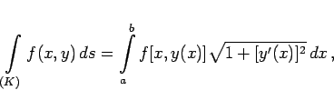
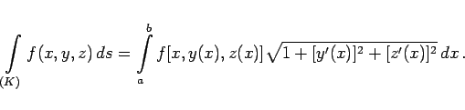

Die Berechnung des Kurvenintegrals 1. Art erfolgt durch Zurückführung auf die Berechnung des bestimmten Integrals.
und im Falle eines räumlichen Integrationsweges mit x=x(t),y=y(t) und z = z(t)
wobei t0 der Wert des Parameters t im Punkt A und T sein Wert für den Punkt B ist. Die Punkte A und B werden so gewählt, daß die Bedingung t0 < T erfüllt ist.
|  | (8.109a) |
und aus (8.108b) im räumlichen Falle
|  | (8.109b) |
Dabei sind a und b die Abszissen der Punkte A und  , wobei die Bedingung a < b erfüllt sein muß. Außerdem wird angenommen, daß jedem Punkt der Projektion des Kurvenstückes K auf die x-Achse dort eindeutig ein Punkt entspricht, d.h., daß jeder Kurvenpunkt eindeutig durch einen Abszissenpunkt bestimmt wird. Wenn das nicht der Fall ist, dann wird das Bogenstück in mehrere Teilintervalle zerlegt, von denen jedes die genannte Eigenschaft besitzt. Das Kurvenintegral über das gesamte Kurvenstück ist dann gleich der Summe der Kurvenintegrale über die Teilintervalle.
, wobei die Bedingung a < b erfüllt sein muß. Außerdem wird angenommen, daß jedem Punkt der Projektion des Kurvenstückes K auf die x-Achse dort eindeutig ein Punkt entspricht, d.h., daß jeder Kurvenpunkt eindeutig durch einen Abszissenpunkt bestimmt wird. Wenn das nicht der Fall ist, dann wird das Bogenstück in mehrere Teilintervalle zerlegt, von denen jedes die genannte Eigenschaft besitzt. Das Kurvenintegral über das gesamte Kurvenstück ist dann gleich der Summe der Kurvenintegrale über die Teilintervalle.